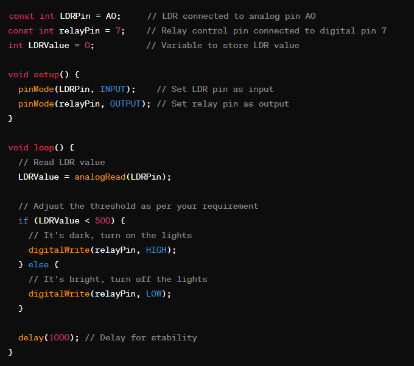

Code:

Explanation:
- The LDR is used to detect ambient light intensity. Depending on the intensity, the Arduino will decide whether to turn the lights on or off.
- The relay module is used to control the external light source (LED strip or light bulb).
- In the code, the threshold value (500 in this case) determines when the lights should turn on or off.
- You may need to adjust this value based on your environment.
- The delay is added for stability and to prevent rapid switching of the lights.